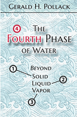

Proposed structure of polywater, from [122c]
It was never proven to exist.
An assessment of so-called polywater and excluded zone water (EZ).
 IE
IE
 HHO
HHO
 Neowater
Neowater
 Clustered and 'declustered' water
Clustered and 'declustered' water
'Look and you will find it - what is unsought will go undetected.'
'I regard this polymer as the most dangerous material on earth'
One of the difficulties in putting forward novel ideas for the structure of water is that the scientific press has been mistaken before and now seemingly prefers to shuffle forward in the almost known and understood rather than take long strides into the less well-known and less understood. This may be reinforced with publication referees manifestly preferring works that reinforce their own beliefs and publications but negatively reacting to opposing views. Of course, some revolutionary works and theories may simply be wrong, and some may be the result of pathological science. Other works, although correct, may falsely be regarded as pathological science to 'support' the opposite views (confirmation bias).
Polywater in 25-µ capillary tube, from [122d]
The first water-related mischance that the scientific literature fell into, concerned polywater (see left small droplets made in a similar manner, < 0.1 µg, in 25 µm diameter capillary tube, originally called anomalous water, modified water or super water) supported by a publication wave of over 500 'scientific' papers between 1962 and 1974. The polywater was reported to be a dense (> 1.3 g cm−3), high boiling ≈ (200 °C), and viscous (20 ˣ increased) form of 'polymeric' water. It was first quietly reported by the Russian Fedyakin in 1962 to spontaneously form by condensation in narrow (< 20 μm) sealed capillaries even after great care had been made to keep the apparatus very clean and the water very pure [122]. It was not formed by simply placing the water in the tubes, even if the temperature was raised. Particularly remarkable properties were that the material was more stable than 'normal' water and could be removed from the glass capillaries and the eccentric properties continued even after further boiling and condensation. There were many scientific meetings, wide media interest, and widely published supporting papers on the phenomenon, including publications in the most prestigious journals Nature and Science in 1969-1970. Also, the ideas had been given momentum from the populist media and continuing support of the well-respected, honorable and careful, scientists, the American Ellis Lippincott, and the Russian Boris Deryagin.
| 'Good news: The U.S. has apparently closed the polywater gap, and the Pentagon is bankrolling efforts to push this country's polywater technology ahead of the Soviet Union's' |
Polywater, by Franks [122e]
As only micrograms of material were available, it was challenging to chemically analyze the 'polywater', but when analyses became available it was shown to contain unforeseen impurities [123]. The New York Times then made unsubstantiated (and very unlikely concerning the original experiments but possible with later rushed preparations made solely for analysis) claims that human sweat contamination caused the effects. However, some samples contained just silica, dissolution of which was not anticipated at that time as quartz vessels were known to hold water without noticeable dissolution. a There were also delays in analyzing the polywater samples due to the minuscule volumes available (< μg) and consequentially low silica contents (< 10−4 μg as then determined). General recognition that the properties of anomalous water were due to impurities (and not a new compound of H and O) was not before it had generated a considerable theoretical literature, both for and, less embarrassingly particularly early on, against. In hindsight, the impurities were probably exaggerated in a rush to find blame. As computers and the theoretical base became more powerful, it has additionally become clear that there is no theoretical support for the hexagonal structuring proposed for 'polywater' (see top right). After it became clear that 'polywater' was not a polymer of water alone but also it was not a product of careless experimental work, many scientists, who should have known better, offered their derisive hindsight.
|
'the concept of polywater is on its last legs' |
There was a positive outcome to this work in that it did stimulate much work on water at that time and showed the importance of materials dissolved from water containers. However, the episode seems to be usually remembered with discomfiture, and that has probably reduced the publications concerned, with water structure over the subsequent few years with many young scientists avoiding the area to steer clear of any similar pitfall or ridicule. Since then, high-density liquid water has been verified to exist (at low temperatures [16]), but this is unrelated to any of the polywater samples. Polywater is still researched but based on the properties of surfaces and concentrated electrolyte silica condensates.

'If our interpretation is to be taken seriously, it must remain robust to challenge'
Highly charged hexagonal layered structure, from Pollack
Almost identical structures (see right) to 'polywater' (see top right of the figure) have been re-introduced as support for Gerald Pollack's ideas in his self-published book 'The Fourth Phase of Water' (Ebner and Sons, Seattle, 2013), and variously related exclusion zone (EZ) water papers (for example, [2077a, c]).
However, Pollack's proposed structuring for the excluded zone water (EZ-water, see right) appears even more unlikely than the original refuted structure for polywater [3800]. Pollack disregards many current basic and well-accepted scientific concepts to invent a structuring without any theoretical, thermodynamic, or experimental rationale for its formation, even well after this had been pointed out to him. b Additionally, the proposed EZ-water structure supposedly forms multi-layers thousands of layers thick (see right showing just a few layers) proposed as linked by (fanciful) multiple triply-bonded hydrogen atoms between the layers (see below left). This proposed structure would result in an unrealistically vast concentration of net negative charges to be present within its small space (≈ 43 M e− net charge). In contrast, the measured pH changes are never significantly greater than 10−3 M with a voltage separation of 0.2 V (equivalent to the 10−3 M pH spread), an error factor of almost five ordered of magnitude. Further, the pH within the EZ-water is never independently established. Quantum-chemical computations show that Pollack's
Multiple triply-bonded hydrogen atoms
between the layers, from Pollack
When calculated, the energy required to assemble Pollack's structure for EZ-water runs into millions of kilojoules per mole H3O2−. No mechanism exists that can stabilize such a structure. A further damning fact is that exclusion zones are found in other liquids such as dimethyl sulfoxide (DMSO, see right) where there is no chance of Pollack's EZ structure being present as there is no H2O [1742].
My conclusion is that Pollack's suggested structure for EZ-water is nonsense, but the existence of the EZ-water is proven but must have a different structure to that proposed by Pollack. EZ-water forms a liquid 'phase' that can be legitimately treated as different from 'bulk' liquid water.
See further for the evidence concerning the existence and likely structure of the EZ-water.
a We now understand that silica glasses may dissolve in water to a small extent (≈ µM) and that they cannot be washed clear of this dissolving material. Also, the presence of dissolved material seems to catalyze further dissolution. However, the extra solubility due to the presence of water vapor remains a puzzle (but see [3279] for the way water can attack glass). On partial drying, these solutions form water-containing silica glasses. Other highly hydrophilic polymers may also form gels containing high percentages (> 99%) of water. [Back]
b There is a widely-accepted science concerning the hydrated OH− ion that shows that the symmetric H3O2− ion (that is key to Pollack's EZ structure) cannot exist for more than ≈ 110 fs, The flaws in Pollack's arguments had been pointed out to him, by the author, multiple times since 2004, 9 years before his 'Fourth Phase of Water' book was published. [Back]
Home | Site Index | Water and health | Strange waters | LSBU | Top
This page was established in 2001 and last updated by Martin Chaplin on 25 October, 2021